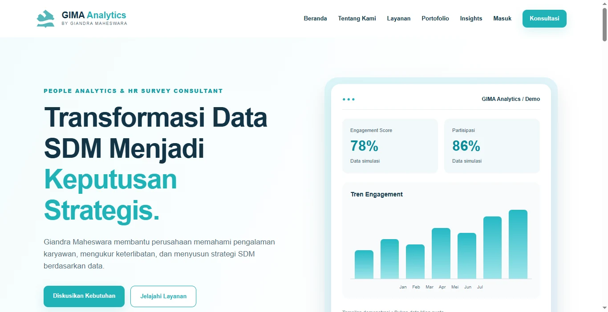
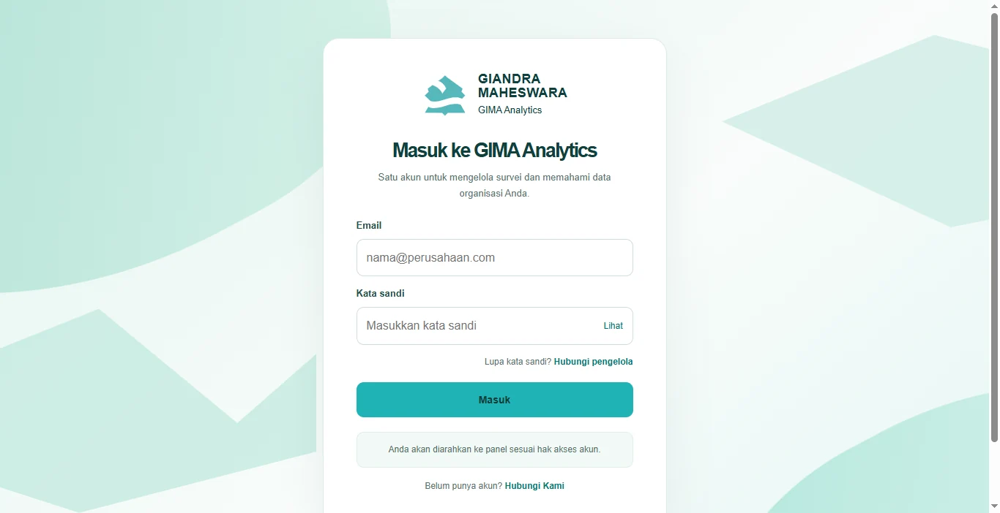
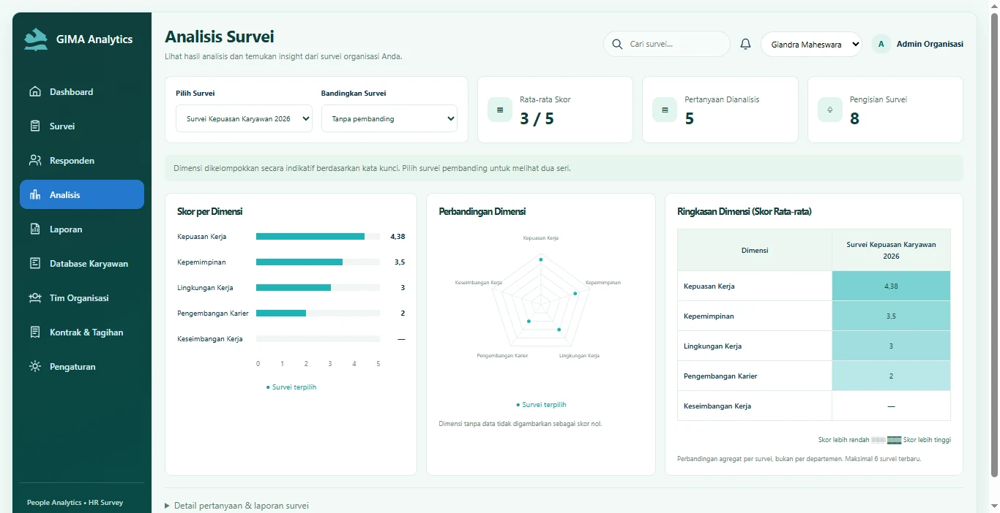
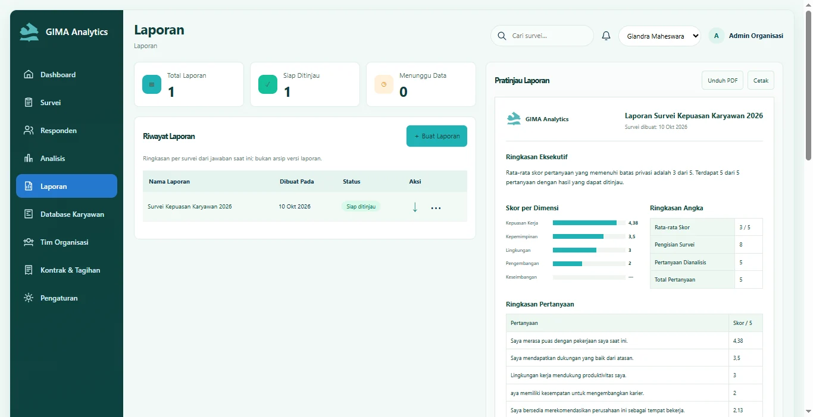
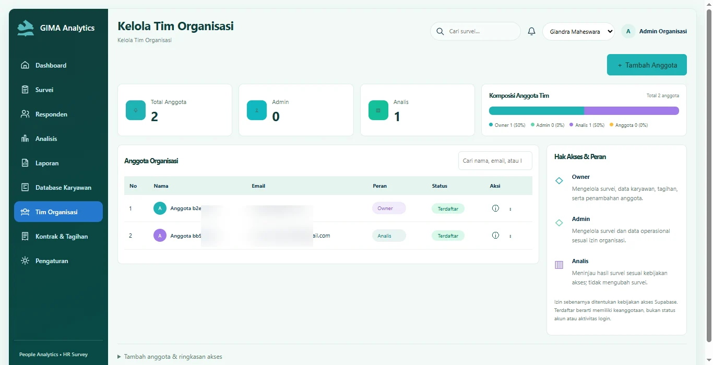

03 / PEOPLE ANALYTICS
GIMA Analytics
HR Survey & People Analytics Platform
Platform untuk membantu organisasi memahami masukan karyawan dan menampilkan informasi SDM dalam dashboard analitik.
Lihat Repository ↗
Tampilan dashboard aplikasi GIMA Analytics.
01 / LATAR BELAKANG
Tantangan yang ingin diselesaikan.
Data survei dan umpan balik karyawan sering tersebar, sehingga sulit diringkas menjadi wawasan yang mudah dipahami oleh pengambil keputusan.
02 / PENDEKATAN
Solusi yang dikembangkan.
Sistem pengelolaan survei dengan visualisasi hasil, ringkasan metrik, dan laporan analitik yang memudahkan evaluasi kondisi organisasi.
03 / FITUR UTAMA
Fitur dan kemampuan sistem.
01Pembuatan dan pengelolaan survei karyawan
02Pengaturan pertanyaan dan responden
03Dashboard engagement dan kepuasan karyawan
04Visualisasi tren dan dimensi survei
05Pengelolaan organisasi dan akses administrasi
06Laporan analisis untuk kebutuhan HR
04 / GALERI PROYEK
Dokumentasi antarmuka.





Dokumentasi antarmuka aplikasi; angka pada tampilan dapat berupa data simulasi.